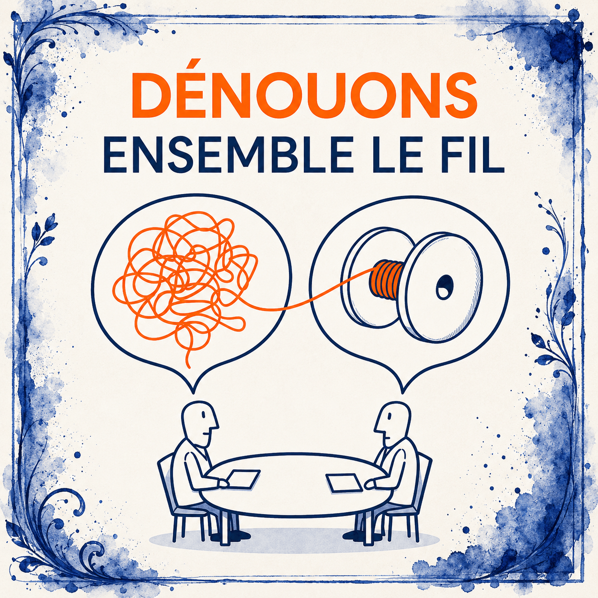

Anouk Journo, autrice depuis plus de trente ans et formatrice expérimentée, anime à L’AMagie des accompagnements d’écriture individuels ou collectifs, adaptés à chaque parcours et à chaque voix.
Que vous portiez un manuscrit en gestation, le désir d’écrire pour vous libérer, ou simplement l’envie de rejoindre un cercle de lecteurs et d’auteurs, vous trouverez ici un espace bienveillant pour libérer votre plume, dépasser les blocages et explorer votre propre voix.
De la première intuition au manuscrit fini, du désir de raconter à la mise en mots qui libère — L’AMagie accompagne toutes les étapes de l’écriture, à votre rythme, sans jugement, dans la confiance.

Un cercle d’écriture animé par Anouk Journo, à Félines-Minervois.
Les cinq voies pour entrer en écriture
Nos accompagnements
I
Mots pour maux
Écriture thérapeutique et libératrice
Écrire pour traverser, comprendre, déposer. Une parole qui apaise et transforme : la page devient un lieu d’accueil, où ce qui pèse trouve enfin une forme et un souffle.
La rencontre sensible avec le vivant pour ouvrir les mots
Des ateliers où la présence des animaux ouvre la parole et crée une confiance nouvelle. Une porte douce vers l’écriture, animée par Anouk, certifiée en médiation animale.
Le plaisir du partage, des lectures et de la création collective
Un cercle où l’on lit, on écrit, on s’écoute. Création collective et bienveillante autour des textes des participants, à partir d’élans, de souvenirs, d’intuitions partagées.
Des sessions construites autour d’un thème, d’une forme ou d’une saison. En groupe, dans la rencontre des voix et des élans partagés. Un espace de création collective au cœur du Minervois.
Suivi individuel de manuscrits et projets de livres
Un coaching sur mesure pour faire naître ou avancer votre projet d’écriture : structure du récit, voix, rythme, mise au point du manuscrit jusqu’à la publication par L’AMagie si vous le souhaitez.
Écrire, ce n’est pas trouver les bons mots — c’est rencontrer les siens.
— Anouk Journo
Informations pratiques
Comment participer ?
Adhésion à l’association — l’adhésion annuelle à L’AMagie (30 €, via HelloAsso) est requise pour rejoindre les ateliers collectifs ou bénéficier d’un accompagnement individuel. Elle soutient l’ensemble de nos actions culturelles.
Lieu — les ateliers en présentiel se tiennent à Félines-Minervois (Occitanie). Les coachings individuels peuvent également se dérouler à distance, selon votre situation.
Tarifs — chaque voie a son rythme et son cadre. Les participations sont volontairement modestes et adaptées à la nature de la formule. Les détails et calendriers sont communiqués au moment de la prise de contact.
Prendre contact — pour échanger sur votre projet ou demander le programme à venir, écrivez-nous via la page contact. Anouk vous répond personnellement et vous orientera vers la voie qui vous correspond.
Pour aller plus loin — vous pouvez aussi explorer le site personnel d’Anouk Journo : anoukjourno.fr.